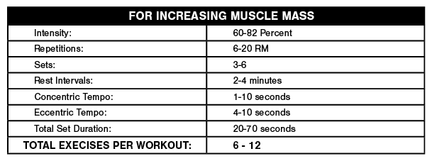
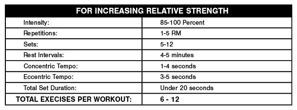

Archive of notes about training (exercise). Bolded text is especially important. [Personal notes regarding blockquotes are in brackets like this.]
Notes on the importance of eating directly after a training session, which foods to eat and which to avoid, and timing considerations.
I
Training for the New Alpinism:
- Carbohydrate: A 150-pound climber needs 270–400 calories of carbohydrate during this post-exercise window [30-60 minutes directly after training]. For best recovery repeat this every two hours to re-stimulate glycogen resynthesis for up to six hours.
- Protein: Consuming protein after a workout is useful to help the body repair damaged muscle, but studies are inconclusive about whether or not the timing is as important as it is for carbohydrate consumption.
- Fluid. Drink water and replace electrolytes. Adjust your intake to match the temperature and the amount you’ve sweated.
II
Role of nutrition in performance enhancement and postexercise recovery:
With less than 8 hours between exercise sessions, it is recommended that for maximal glycogen synthesis, 1.0–1.2 g/kg/hour is consumed for the first 4 hours, followed by resumption of daily carbohydrate requirements. Additional protein has been shown to enhance glycogen synthesis rates when carbohydrate intake is suboptimal. The consumption of moderate to high GI foods postexercise is recommended; however, when either a high-GI or low-GI meal was consumed after glycogen-depleting exercise, no performance differences were seen in a 5 km cycling time trial 3 hours later.
No significant difference in MPS was observed over 4 hours postexercise when a mixture of essential amino acids and sucrose was fed 1 hour versus 3 hours after resistance exercise. Conversely, when a protein and carbohydrate supplement was provided immediately versus 3 hours after cycling exercise, leg protein synthesis increased threefold over 3 hours. A meta-analysis found timed postexercise protein intake becomes less important with longer recovery periods and adequate protein intake, at least for resistance training.
Dose–response studies suggest approximately 20 g of high-quality protein is sufficient to maximize MPS at rest, following resistance, and after high-intensity aerobic exercise. ... feeding 20 g of whey protein every 3 hours was subsequently found to maximally stimulate muscle myofibrillar protein synthesis following resistance exercise.
III
Nutritional strategies to promote postexercise recovery:
Notes on training two times per day vs. once, especially in contradictory disciplines (e.g., strength and endurance). I currently (20 September 2022) train strength three times per week and endurance (via cycling) four to five times per week. Only one of those days overlaps per the schedule, but sometimes I'm forced to do multiple days of strength and endurance sessions on the same day.
Takeaways:
I
Concurrent Training - How to Develop Strength and Endurane Simultaneously? (there are a plethora of excellent sources in the references section of this post):
Murlasits et al. (2018) found in their review that lower body 1RM increased more when strength training was done first in the same session with endurance training. In contrast, order of training mode had no impact on changes in aerobic performance.
Studies done with rodents and cell cultures have showed that signaling pathways activated by endurance training are found to inhibit acute anabolic response from strength training but not the other way around. Although, this effect hasn’t been reliably demonstrated in humans. (Fyfe et al 2014.)
Robineau et al. (2016) investigated how performing endurance exercise after different recovery periods (0h, 6h and 24h) after strength exercise affects strength and aerobic performance development. Strength increased less in 0h group compared to 6h and 24h groups. Aerobic performance increased in all groups but most in the 24h recovery group. Also, Sporer and Wenger (2003) concluded that total work that can be done during strength training is diminished for at least 8 hours after endurance training. Diminishing of work capacity seems to also be localized to the muscle groups used in preceding endurance training session. By these studies, separation between modes of training should be over 8 hours and in a most optimal situation at least 24 hours.
Key points to remembers when programming your concurrent training program:
- Strength training should be done first if both training modes are performed in a same session.
- Perform endurance training in the morning and strength in the evening, if you train twice a day.
- Separate training modes with over 8 hours of recovery.
- If possible, train different body parts in endurance and strength sessions in the same day.
II
III
Notes on improving my body's ability to utilize fat as a fuel source, especially during extended efforts. This is important for performance in case carbohydrates are unavailable: if my body is unable to use fat efficiently, my energy will be depleted quickly. As a nice side effect, fat oxidation obviously improves aesthetics.
Definitions:
Takeaways from the notes below:
I
Exercise Training and Fasting: Current Insights:
Our review of the literature suggests that there is little evidence to support the notion of endurance training and fasting-mediated increases in fat oxidation, and we recommend that endurance athletes should avoid high intensity training while fasting.
II
Optimizing fat oxidation through exercise and diet:
Exercise intensity and duration are important determinants of fat oxidation. Fat oxidation rates increase from low to moderate intensities and then decrease when the intensity becomes high. Maximal rates of fat oxidation have been shown to be reached at intensities between 59% and 64% of maximum oxygen consumption in trained individuals
The mode of exercise can also affect fat oxidation, with fat oxidation being higher during running than cycling. Endurance training induces a multitude of adaptations that result in increased fat oxidation. The duration and intensity of exercise training required to induce changes in fat oxidation is currently unknown. Ingestion of carbohydrate in the hours before or on commencement of exercise reduces the rate of fat oxidation significantly compared with fasted conditions, whereas fasting longer than 6 h optimizes fat oxidation. Fat oxidation rates have been shown to decrease after ingestion of high-fat diets, partly as a result of decreased glycogen stores and partly because of adaptations at the muscle level.
III
Nutritional Factors That Affect Fat Oxidation Rates During Exercise:
There is large individual variation in MFO [maximal fat oxidation] and FATMAX [exercise intensity where MFO occurs], with new emerging research suggesting that individuals may have a unique fat oxidation curve.
Ingesting carbohydrate prior to exercise has been found to decrease fat oxidation rates by ~30%.
Fat is the dominant fuel at low exercise intensities and contributes about 50% of the fuel at exercise intensities of ~50-60% of maximal oxygen uptake (VO2max). As exercise intensity increases above ~60-65% VO2max there is a shift in energy substrate utilization, with a progressive increase in the relative contribution of CHO and a concomitant decrease in fat to total energy expenditure.
A meta-analysis conducted by Hursel et al. (2011) reported a 16% increase in fat oxidation at rest when a GTE [green tea extract] (including caffeine) had been consumed; however, only six studies were included in the analysis. During exercise, studies which have investigated the effects of GTE supplementation on fat oxidation rates have reported equivocal findings. Venables et al. (2008) found a 17% increase in fat oxidation rates during a 30-min steady state cycle performed at 60% VO2max following an acute dose of GTE consumed prior to exercise, compared to placebo.
Following the 6-week training period, fat metabolism proteins increased to a greater extent in the fasted group compared to the fed group. However, no differences were found in fat oxidation rates between the two groups, but the consumption of CHO during the exercise bouts may have prevented any changes in fat oxidation. In addition, a similar study from the same research laboratory, observed greater intramuscular triglyceride breakdown during exercise following a period of fasted training compared to fed training. Again, no differences were found in fat oxidation rates. [This is important.]
IV
Fat burners: nutrition supplements that increase fat metabolism:
Based on the available data, caffeine and green tea have evidence that they indeed have some properties that enhance fat metabolism. However, effects in humans have generally been small and more consistent in low habitual caffeine consumers.
I've always been skeptical of the snake salesmen and their products that advertise the ability to burn fat off, but sounds like they just load it up with caffeine!
V
Understanding the factors that effect maximal fat oxidation:
The regulation and utilization of FAs in a maximal capacity occur primarily at exercise intensities between 45 and 65% VO2max, is known as maximal fat oxidation (MFO), and is measured in g/min. Fatty acid oxidation occurs during submaximal exercise intensities, but is also complimentary to carbohydrate oxidation (CHOox).
Increased fat oxidation has been shown to improve with endurance training, and therefore increases in MFO parallels changes in training status.
Studies show that endurance training promotes reliance on endogenous fuel sources for up to 120 min of submaximal exercise.
From REI's Layering Basics:
Three layers are used: an underwear layer to wick sweat off the skin; an insulating layer to retain body heat; and an outer layer (rainwear) to protect from wind and rain.
Outer layer (rainwear): There is a difference between waterproof (WP) and water-resistant (WR): proof means it can withstand rain indefinitely without getting the wearer wet, while resistant means it can handle light rain for a bit before water starts to make its way through. WP jackets may be breathable for performance or non-breathable for just keeping dry. The same principle applies to windproof/-resistant jackets: proof blocks 60+ mph winds (all waterproof jackets are also windproof), resistant helps with small gusts.
Hard shell is synonymous with WP/breathable. Soft shells combine insulation with a WR layer to serve as a breathable midlayer/outer layer hybrid. SS is best for high-exertion activities.
Breathability is the efficiency of moisture inside the jacket to outside the jacket.
Laminate material is better than coatings in almost all categories.
More on rain gear technology here.
These three categories are just for the upper and lower body, not the extremities:
Cotton should never be worn. It easily traps water and takes a long time to dry out (I couldn't find any numbers to accurately compare to wool and synthetics, but this is well-established).
Overall comfort and ease of removal is important. The insulating layer and outer layer should be easy to take off and back. No layer should be too tight, although the base layer should be fairly snug for maximum wicking, as discussed before.
It's important to control exertion as much as possible to prevent sweating (read: to stay dry). Once sweating starts, the clock starts ticking on the ability to wick. Slow down or remove a layer to cool off and slow/stop sweating.
See also:
I made the following PDF back in 2014 when I was enamored with Ido Portal and his method. It covers his Facebook posts up to that point, as well as his old Blogspot. Because my Facebook account is now banned from looking at his and I'm no longer a fanboy, it stops at 2014.
The Training and Life Wisdom of Ido Portal
The PDF these notes were taken from can be found here.
The bulk of any serious runner's training volume is comprised of slow to medium paced continuous runs. Experience has shown that easy runs of lengths which are multiples of about 30 min. have the optimum effect on aerobic development. ... running economy (at submaximum aerobic speeds) is without doubt in part a "step function" of the length of regularly performed easy runs, as opposed to a linear function. Thus, 55 min. is better than 35 min., but 65 min. is far better than 55 min.! This step functional relationship is only noticeable over a period of weeks, but it becomes quite pronounced after about 3 months.
The main purposes of continuous easy runs are to build capillary beds, increase the size and number of mitochondria in the muscle cells, improve fuel metabolism, increase aerobic metabolites, and train fast twitch (FT) muscle fibers to become oxidative. Running easily for a day or two following a hard effort also clears lactate and speeds up recovery.
Roughly 40% of a runner's total training volume should consist of easy runs at 60% to 70% of maximum effort [effort is defined earlier using this example: "Effort level is ascertained by subtracting resting HR from maximum HR to obtain the range. 60% effort refers to 60% of the way up the range from resting HR to max HR. For a runner with a resting HR of 40 beats per min. and a max of 200 bpm, the range is 160. 60% of 160 is 96, so 60% effort for this runner would be 40 + 96 = 136 bpm."]. This feels too slow to many competitive runners, but it still accomplishes the desired task if the duration of the daily runs is correct and if the overall training mileage is sufficiently high.
Poliquin Principles is split into two parts: Section 1, "Defining the Poliquin Principles" (in regards to training methodology), and Section 2, "Applying the Poliquin Principles" (in regards to exercise selection and nutrition). The book is primarily geared towards bodybuilders, but strength athletes can heed its advice, too.
reps in the 1-to-5 range maximally increase strength with minimal gains in muscle mass, and reps in the 6-to-12 range maximally increase strength through muscle mass gains. [Higher rep ranges are neglected, but the table states that 9-12 are "best hypertrophy gains leading to increased maximal strength" and 13+ are "strength endurance gains and lower hypertrophy gains"]
But there is overlap in all of these. 1-5 reps can still pack on muscle (depending on other things) and 13+ can still provide strength (albeit way less efficiently).
At any given percentage of their maximum for one rep (1RM, or one repetition maximum), a woman can perform more reps than a man. Take the arm curl, for example. At 70 percent of her 1RM, we’ve found that a woman should be able to perform about 17 reps, whereas a man should be able to complete only about 12. Also, because there is an inverse relationship between sets and reps, this difference in neurological efficiency means women should do fewer sets at a given intensity.
The number of sets performed should be inversely proportionate to the size of the muscle mass trained. Small muscle groups recover more quickly than large muscle groups and, therefore, can handle more sets. Thus, you can perform more sets for the biceps than you can for the quadriceps.
To maintain the quality of the training stimulus, you should perform no more than 30-36 sets per workout. We’ve seen better results when the total number of sets is kept between 20 and 25.
Muscles that are inherently fast-twitch respond best to more sets; muscles that are inherently slow-twitch respond best to fewer sets. Thus, you can perform more sets for the hamstrings (fast twitch) than for the soleus (slow twitch). Also, muscles not normally subjected to intense loading in daily activities, such as the neck flexors, respond better to fewer sets.
The neuromuscular basis of relative strength training involves performing brief but maximal voluntary contractions to improve the neural drive to the muscles. The great voluntary effort associated with such training recruits the highest-threshold motor units so as to make use of their greater strength and rate of force development. Near-maximal and maximal weights must be used.
When designing tempo prescriptions, there are some general guidelines you can follow that are backed by sport science. Slow-speed lifting brings about more metabolic adaptations than high-speed lifting. Training at faster speeds does not induce these changes. Also, performing slow reps builds the connection between the mind and the muscle, and they make a great finishing-off set.
To develop maximum muscle mass, the optimal time a muscle should contract during a set should fall between 20 and 70 seconds. This range allows for a lot of variation, from sets consisting of 1 rep and lasting 70 seconds (brutal!) to sets involving 15 reps.
In the bench press it has been shown that pausing 4 seconds on the chest will dissipate virtually all the plyometric effect elicited in a heavy lift. In fact, it’s estimated that during a bench press competition an extra 1-second delay for the judge’s clap could make a 5 percent difference in the amount of weight lifted! In contrast to powerlifters, bodybuilders want to emphasize longer pauses in their training because the muscles must contract harder when the plyometric effect is reduced.
For the development of maximal strength, slow-speed training performed with heavy weights has a definite advantage over high-speed lifting. Slowing the movement increases both the duration of the stimulus and the levels of tension imposed on the muscle, factors that favor the development of strength and muscle mass. High-intensity, slow-speed training, which would be indicated by exercise prescriptions such as 4 x 4-6 on a 4161 tempo, will produce the following muscle-building effects: stimulation of the Type IIa fibers and increased muscle glycogen, CP, ATP, ADP, creatine, phosphorylase, PFK, and Krebs cycle enzyme activity – which collectively equate to more strength and muscle mass!
The key in power training for athletes is to keep the repetitions low (generally 1-5) to recruit the high-threshold motor units. Training with higher reps, even while concentrating on acceleration, would still access lower-threshold fibers.
The length of your rest between sets affects several factors that are important in the adaptations brought on by your training. The rest interval accomplishes the following:
- Regulates the partial, or nearly complete, restoration of the short-term-energy substrates necessary for maximal performance.
- Allows for the clearance of the metabolic waste accumulated in muscle tissue following intense muscular work.
- Allows the central nervous system to recover.
- Slows down the elevated metabolic rate and heart rate caused by exercise.
- Affects the secretion of hormones that affect strength, fat loss, and muscle gains and to what magnitude.
Sports scientists recommend rest intervals of three to four minutes (and up to five minutes) for training with maximal loads: 1- to 5 reps maximums at 85 to 100 percent of max. That approach prevents early fatigue and enables you to make repeated efforts at high intensity.
A guiding principle when developing strength is that the rest interval should be long enough to permit the nervous system to recover almost completely but not so long that you lose what’s called the post-tetanic potentiation effect (PTP). PTP is the phenomenon by which your contraction strength potential is increased for five to 10 minutes after a heavy set because of greater neural activation. ... The peak effect – that is, greatest potentiation – occurs about four minutes after a near-maximal contraction and then gradually wanes so that it’s gone by around the fifth minute. Consequently, when training for strength, you should rest about four minutes between sets of an exercise – that is, assuming we’re talking about a compound exercise. For isolation exercises, three minutes rest should suffices.
An individual’s maximal strength has an impact on that phenomenon, however. If you can curl 155 pounds for reps, you may need four minutes rest; if you curl only 75 pounds for reps, three minutes rest should suffice.
There are several other factors to consider when determining rest intervals:
- Training experience. The ability to tolerate short rest intervals with loads in the 60-80 percent range (6-20 reps) is a function of years of accumulated training. The lactate buildup resulting from this type of training is tolerated by only the well-conditioned bodybuilder. Therefore, rest intervals must be shortened for advanced trainees only, as for beginners lactate buildup will interfere with proper exercise performance. In fact, to prevent excessively high lactate buildup, it’s best to alternate upper- and lower-body exercises in your workouts.
- Muscle mass and strength levels. The bigger and stronger the trainee, the longer the rest interval should be. There appears to be a direct linear relationship between the length of the rest interval and the bodyweight of the trainee.
- Aerobic fitness. The more aerobically fit an athlete is, the shorter the rest interval should be – that’s the theory. The problem is that an aerobically-fit individual is normally weaker and usually possesses minimal muscle mass. It’s also common that these individuals tend to rush between heavy sets to maintain a high heart rate which decreases neural adaptation. Unfortunately, a high heart rate by itself does not lead to maximal gains in strength and mass.
Poliquin lays out eight (8) principles of training frequency:
- Frequency is recovery dependent. Frequency is dependent upon your recovery ability at any given time. Failure to respect this rule may cause overtraining that could cause you to lose strength and muscle mass and come down with a variety of ailments that include lethargy and recurrent colds. Most bodybuilders train too frequently because they do not know how to assess their recovery ability or because they take too literally the slogan, “No pain, no gain.” However, provided you do an honest job and use the proper ratios of reps and sets, a frequency prescription of “twice per week, per muscle group” should work well. If you’re a more advanced bodybuilder, one workout every five days is probably the optimal training frequency.
- Frequency is strength dependent. The weaker the trainee, the more frequently they can train. In cases of rehabilitation, such as post surgery, training frequencies of 4-6 times a week are well tolerated. Female trainees, because of their lower levels of maximal strength initially, need greater frequencies of training to maximize their training progress. As female trainees reach higher levels of strength, the differences in training-frequency requirements diminish appreciably. This effect usually occurs after two full years of training.
- Frequency is muscle-group dependent. Large muscle groups recover slower than smaller muscle groups, and muscles with a high percentage of fast-twitch muscle fibers recover slower than muscles with a high percentage of slow-twitch fibers. These facts have many practical applications. For example, while the soleus (predominately a slow-twitch, large-muscle group) may be trained two to three times a week, the hamstrings (predominantly a fast-twitch, large-muscle group) respond better to one or two training sessions per week.
- Frequency is exercise dependent. Exercises that involve a small number of motor units, such as calf raises and wrist curls, can be performed more frequently than exercises that involve many motor units, such as squats. Exercises that involve a high percentage of motor units make greater demands on the central nervous system and, therefore, require longer recovery periods – it is not uncommon for powerlifters to rest ten days between intense deadlift sessions. Also, because multijoint exercises involve more muscles, they can create enough stimulus to ensure that strength and muscle mass are maintained in the secondary muscle groups.
- Frequency is individualized. Frequency is dependent on work capacity. Some individuals can handle prodigious training volumes, while others can handle only minimal volumes. With our clients, we look at their training response in their workout diaries, and increase or decrease their training frequency based on how fast they progress.
- Frequency is repetition-bracket dependent. The greater the intensity, the more rest is needed between workouts. Because intensity is partially determined by the number of reps performed per set, more rest days are needed between training sessions emphasizing low reps.
- Frequency is influenced by adrenal stress. All stressors have both general and specific effects on the body. If an athlete performs a set of squats, that activity has a specific stress on the muscle fibers, but it also produces general stress that triggers neural and hormonal responses. If the stress levels are too high, the body will not be able to adapt, and progress will cease or even regress. Aerobic work is one of the worst offenders in creating adrenal stress.
- Frequency is dependent on nutritional intervention. Numerous studies have established that one of the keys to optimal recovery is post-workout nutrition, which requires carbohydrates to lower cortisol levels and increase muscle glycogen. If the nutrition is good, a higher frequency of training can be tolerated.
Workouts exceeding the one-hour mark have been shown to be associated with rapidly decreasing androgen levels. This shift in androgens probably upsets the testosterone-cortisol ratio. Since this value is strongly correlated to strength gains, one may infer that training under depressed androgen levels is counterproductive, since the catabolic effects of the glucocorticoids would negate the anabolic effects of the androgens.
One of the most important principles about training volume is this: Volume of training is always inversely related to intensity. In other words, you cannot work intensely and perform great amounts of work at the same time -- when the volume is high, the intensity is low and vice versa.
I would be interested to see the actual curve from above: percentage of 1RM on the x-axis and volume on the y-axis.
2 Percent Rule will apply to you. It states that every time you repeat a workout, you should be able to add 2 percent weight on the bar for the same number of reps or do an extra rep with the same weight. Thus, if you bench pressed 200 pounds for 8 reps in one workout, during the second workout you should be able to lift 204 pounds for 8 reps or lift 200 pounds for 9 reps. If you can accomplish this progression, or improve upon it, then your training frequency is appropriate.
As expected, the 2% rule regresses to the 1% rule and so on after an appreciable training history is developed.
The variation in the HGH response to these exercises is probably due to the differing mechanics of the two lifts. The larger hormonal responses associated with exercises involving large amounts of muscle mass – squats, for example – are partially responsible for indirect strength in untrained muscle groups, even the forearm extensors. So, how does this apply to training? When designing workouts for maximal weight loss, you want to get the greatest hormonal response. For that purpose choose exercises that are multijoint and that especially affect the lower-body muscles. To maintain a high level of intensity throughout such a workout, and because it takes longer to recover from lower-body exercises, alternate between upper- and lower-body exercises.
This can explain why people who focus primarily on squatting are so strong in other areas.
It is critical to train the antagonist of the targeted muscle group. ... weak antagonists send inhibitory signals to the brain that shut down force output in the agonists.
improperly trained small stabilizing muscle groups will prevent the trainee from increasing the load on a compound exercise. This is because if the stabilizers perceive excessive tension on the prime movers, they will shut down neural output in the prime movers. The problem can be corrected by identifying the deficient area and training it with specific exercises at the end of the workout.
We are proponents of thick-bar training for bodybuilders for two main reasons: First, it increases motor-unit activation. The more motor units you recruit and the higher their firing rate, the faster you gain in strength. ... Second, thick-bar work increases grip strength and forearm development because the fingers, wrists, thumbs and forearms are more challenged by the bigger diameter.
As a general guideline, exercises should be changed every six workouts for optimal progress. Elite athletes need to change their exercises more frequently because their bodies adapt so quickly. Beginning and intermediate athletes may be able to use the same exercises for a month without experiencing a drop-off in progress. Another key factor that influences the rate of change is the nature of the exercise. The upper body needs more frequent changes in exercises than the lower body.
This section is split up by body part and nutrition.
The simple deep knee bend is unquestionably the single most productive leg exercise you can perform. No other weight training exercise works as many major muscle groups, including the quads, as thoroughly or with greater intensity. Additionally, due to the number of muscle groups involved, the squat burns more calories than any other weight training exercise and positively stimulates the cardiovascular system.
EMG data suggest that the front squat is more effective than the back squat for activating the vastus lateralis and the rectus femoris. Further, biomechanical analysis indicates that the front squat places less compressive forces on the knee. In other words, the front squat works the quads harder with less stress on the knees.
Other squat variations are discussed. I am a big fan of split squats, especially rear foot elevated SS, for the extra load they place on the legs and the load they take off the back.
The hamstring muscle group is composed of three separate muscles: the semimembranosus and the semitendinosus, which collectively are referred to as the medial hamstrings; and the biceps femoris, which is often called the leg biceps. The medial hamstrings cross the hip and the knee joint and are involved in extending the hip and flexing the knee; they also assist in turning the knee inward (medial rotation). The leg biceps, like its cousin the biceps brachii, consists of two heads: the long head and the short head. The long head crosses both the hip and the knee joint and is, therefore, involved in extending the hip and flexing the knee. The short head also flexes the knee, but because it does not cross the knee joint, it cannot extend the hip. However, both heads assist in turning the foot outward (lateral rotation of the knee). In addition to these three hamstring muscles, there are additional muscles that are considered synergistic to the hamstrings in that they assist in flexing the knee and extending the hip. The muscles that assist the hamstrings in their knee flexor function are the sartorius, gracilis and gastrocnemius. The muscles that assist the hamstrings in their hip extensor function are the glutes and the erector spinae muscles.
Always eat breakfast – opt for a high-protein, low-glycemic meal. The meat allows for a slow and steady rise in blood sugar. The nuts provide a great source of healthy smart fats that allow the blood sugar to remain stable for an extended period.
Consider eliminating gluten, wheat, and other grains to support insulin health. Humans have never had adequate stomach enzymes to break down gluten so that it can be properly digested. Wheat raises the blood sugar levels quickly in the same way as plain table sugar. Foods based on white flour, such as white bread and many cereals, are a poor source of fiber, and they have a high glycemic content, meaning they cause a quick spike in insulin. The presence of insulin tells the liver that food intake is meeting energy requirements, so lipolysis, or the breakdown of fat for energy from body stores, becomes unnecessary. The insulin spike stops the body from burning fat for fuel. Any excess sugar or food intake is saved for future energy requirements and is stored as fat. Constantly high insulin levels will make the body resistant to insulin and will lead to diabetes. This is why it’s best to eliminate grains, particularly white grains, and it’s important to do resistance training – you’ll improve insulin sensitivity.